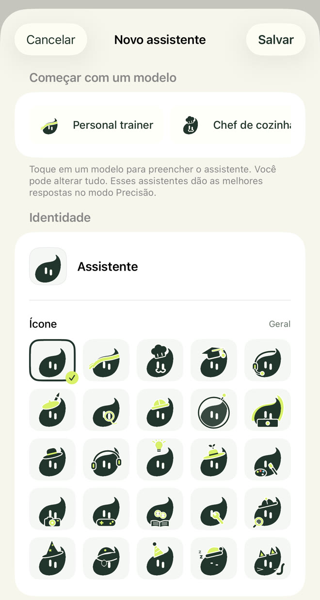
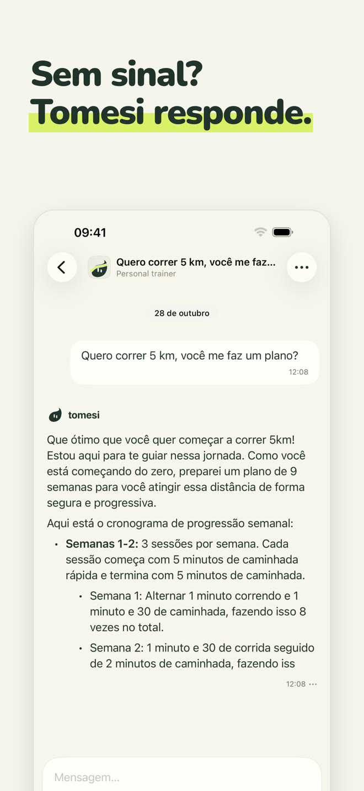
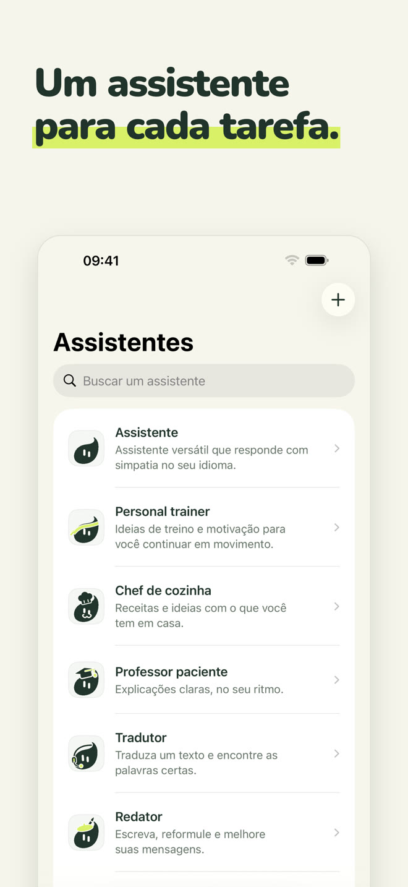
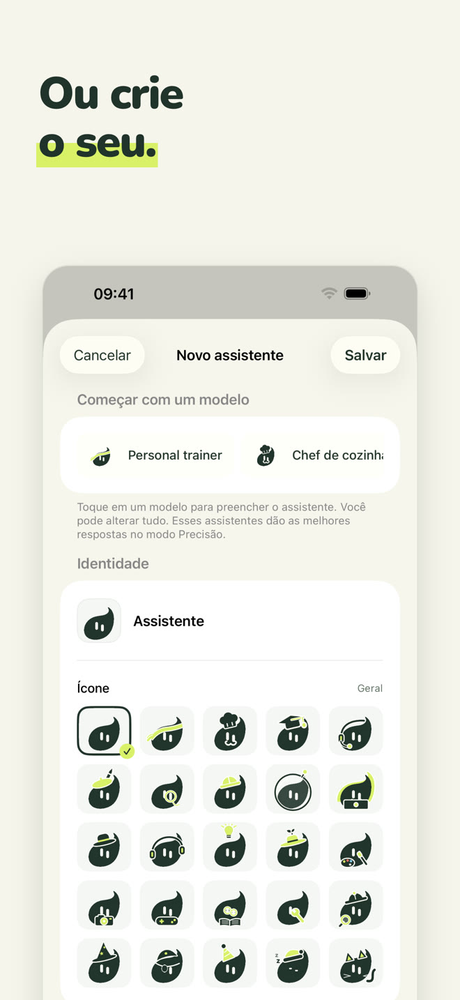
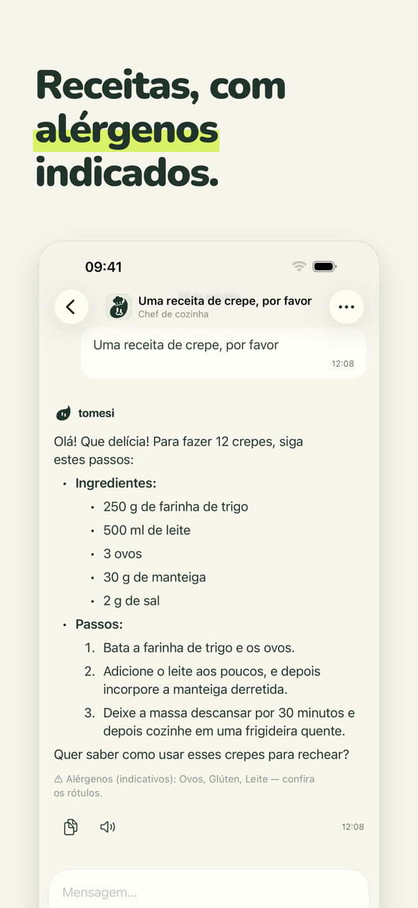
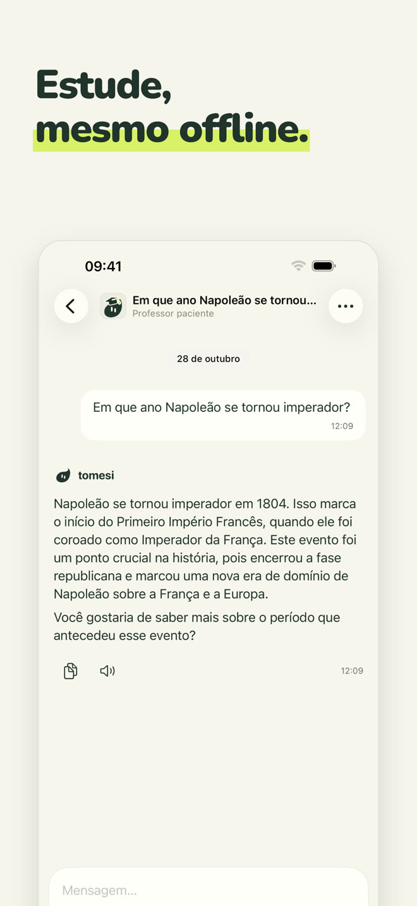
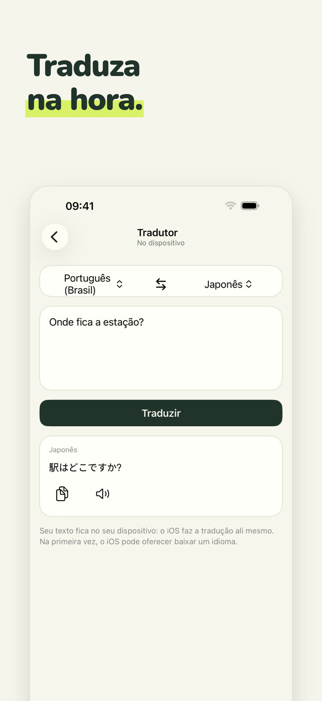
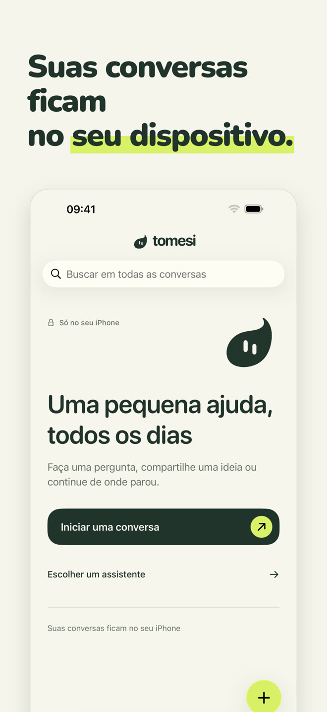

Um assistente de IA 100% local: ele roda no seu iPhone, no avião, na montanha, no exterior. O que você escreve nunca sai do seu celular.
Baixar na App StoreCompra única · sem conta · sem assinatura
Cada assistente tem seu papel e seu jeito de responder. Escolha o que ajuda você, ou converse simplesmente com o assistente geral.
Versátil, ele responde com gentileza no seu idioma.
Treinos adaptados ao seu tempo e equipamento, planos semana a semana.
Receitas simples com o que você tem, com alérgenos indicados.
Explica passo a passo, no seu ritmo: matemática, história, ciências, gramática.
Traduza textos entre 13 idiomas, na hora.
E-mails, mensagens, cartas; e a ortografia corrigida erro por erro.
Dê a ele um nome, uma personalidade e um dos 25 pictogramas do Tomesi: um assistente do seu jeito, que também usa as fichas do aplicativo.

Um modelo pequeno não pode saber tudo. O Tomesi traz fichas revisadas e as entrega ao assistente na hora de responder.
Quantidades, etapas e alérgenos, mostrados pelo aplicativo abaixo da resposta.
14 países, além de fichas de ciências, geografia e gramática em 14 idiomas.
E 65 fichas: planos de várias semanas, recuperação, alimentação, esportes.
Como toda IA, o Tomesi pode errar: confira as informações importantes.







A IA fica instalada no seu iPhone. O que você escreve nunca é enviado pela internet nem guardado em outro lugar.
Sem cadastro, sem e-mail, sem anúncios, nenhum dado coletado.
Não há servidores para pagar, então não há assinatura: o aplicativo é seu.
O modo Precisão, opcional, baixa um modelo mais potente (cerca de 3 GB) para respostas que pedem mais detalhe.
Sim. Depois que o aplicativo e o assistente estão instalados, o Tomesi não precisa mais de internet: a IA roda inteiramente no seu iPhone. Você pode conferir ativando o modo avião.
Para lugar nenhum. Eles ficam no seu celular. O Tomesi não tem servidor de conversas, conta de usuário nem anúncios. Veja nossa política de privacidade.
O ChatGPT vive em servidores: é preciso conexão, e suas conversas passam por eles. O Tomesi vive no seu iPhone: menos enciclopédico que um gigante da nuvem, mas sempre disponível, totalmente privado e sem assinatura.
Um iPhone com 8 GB de memória (iPhone 15 Pro ou mais recente) com iOS 26 ou mais recente. Reserve cerca de 3 GB livres, e mais 3 GB para o modo Precisão, opcional.
Sim, como toda IA. As receitas, as datas históricas e as fichas do aplicativo são verificadas e entregues ao assistente, o que reduz muito os erros, mas confira sempre as informações importantes.
O Tomesi está traduzido em 13 idiomas (português, inglês, francês, alemão, espanhol, italiano, holandês, polonês, japonês, coreano, chinês simplificado, russo…) e o assistente entende e responde em ainda mais idiomas.
Sim. O MonIA agora se chama Tomesi. Se você já comprou, não precisa comprar de novo: basta atualizar, e suas conversas ficam no seu celular.